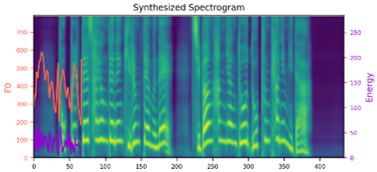
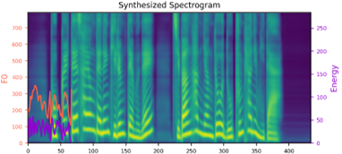
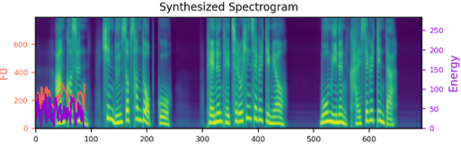
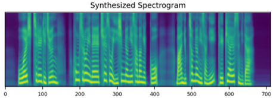
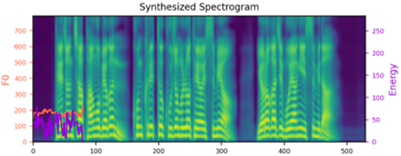

We propose a novel high-fidelity expressive speech synthesis model, UniTTS, that learns and controls multiple non-hierarchically correlated attributes without conflict. UniTTS represents phonemes and non-linguistic attributes in a single unified embedding space. The proposed method is particularly effective in reflecting both speaker ID and emotion because it does not add the variance by the two overlapping attributes redundantly, and predicts prosodic attributes based on the speaker and emotion IDs. UniTTS learns the unified embedding space leveraging a residual network that extends FastSpeech2. We additionally applied a data augmentation technique to improve the fidelity and controllability over the non-linguistic attributes. In experiments, the visualization results exhibited that UniTTS successfully learned multiple attributes in the unified embedding space. As well, UniTTS synthesized high-fidelity speech signals while controlling multiple attributes, and transferred speech style from the reference speech.
Speaker Similarity
GT
GST + FastSpeech2
Concatenate Speaker and Emotion embedding
UniSpeech
UniSpeech - data aug.
UniSpeech - local prosody
UniSpeech - local prosody and data aug.
Emotion Similarity
GT
GST + FastSpeech2
Concatenate Speaker and Emotion embedding
UniSpeech
UniSpeech - data aug.
UniSpeech - local prosody
UniSpeech - local prosody and data aug.
Effect of Data augmentation
Pitch control
+
0
-
GT mel
GT wavs
w/ data aug. mel
w/ data aug. wavs
w/o data aug. mel


w/o data aug. wavs
Energy control
+
0
-
GT mel
GT wavs
w/ data aug. mel
w/ data aug. wavs
w/o data aug. mel
w/o data aug. wavs
Pitch and energy control
0
pitch +, energy +
pitch +, energy -
pitch -, energy +
pitch -, energy -
GT mel
GT wavs
w/ data aug. mel
w/ data aug. wavs
w/o data aug. mel
w/o data aug. wavs
Style Mixing
Speaker identity transfer
Speaker
Other prosodies
Mixed
Male (1) speaker + Male (2) prosody mel
Male (1) speaker + Male (2) prosody wav
Male speaker + Female prosody mel
Male speaker + Female prosody wav
FeMale speaker + Male prosody mel

Female speaker + Male prosody wav
Female (1) speaker + Female (2) prosody mel
Female (1) speaker + Female (2) prosody wav
Emotion representation transfer
Emotion
Other prosodies
Mixed
Neutral emotion + other prosodies mel
Neutral emotion + other prosodies wav
Happy emotion + other prosodies mel
Happy emotion + other prosodies wav
Sad emotion + other prosodies mel
Sad emotion + other prosodies wav
Angry emotion + other prosodies mel

Angry emotion + other prosodies wav
Transfer emotion, duration, pitch and energy representations to KSS speaker
(Please note that no emotion label exists in KSS dataset)
KSS speaker
Other prosodies
Mixed
KSS + emh speaker's prosodies mel

KSS + emh speaker's prosodies wav
KSS + emg speaker's prosodies mel
KSS + emg speaker's prosodies wav
KSS + ema speaker's prosodies mel
KSS + ema speaker's prosodies wav
KSS + emh speaker's prosodies mel
KSS + emh speaker's prosodies wav
Mix speaker and emotion representations of KES speaker and prosodies of speakers in EmotionTTS dataset
(Please note that no surprise, fear and disgusting emotions exist in EmotionTTS-open-DB dataset)